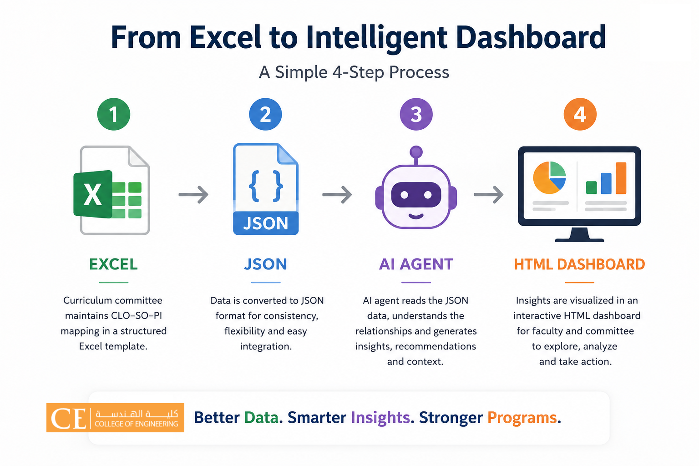

Curriculum Intelligence Portal
One unified place for curriculum visualization, CLO mapping, assessment alignment, program dashboards, concentration planning, SO/PI coverage, and continuous improvement evidence.
MSc Electrical Engineering
Program overview, course specifications, concentration areas, electives, CLO–PLO mapping, and course-level dashboards.
Undergraduate Electrical Engineering
ABET-oriented curriculum mapping, course CLOs, Student Outcomes, Performance Indicators, and SO leader gap/risk monitoring.
Unified workflow
1. Excel / Course SpecsCollect curriculum, CLOs, teaching strategies,
assessment methods, and mappings.
2. JSON Data LayerConvert the information into clean structured
datasets.
3. AI-Assisted ReviewCheck alignment, gaps, risks, and consistency
across courses and outcomes.
4. HTML DashboardsPublish interactive dashboards for faculty,
committees, and program leaders.
This visual summarizes the workflow used to transform curriculum mapping data into interactive dashboards.

Additional Curriculum Resources
Supporting portals and strategic resources developed by the Curriculum Committee.